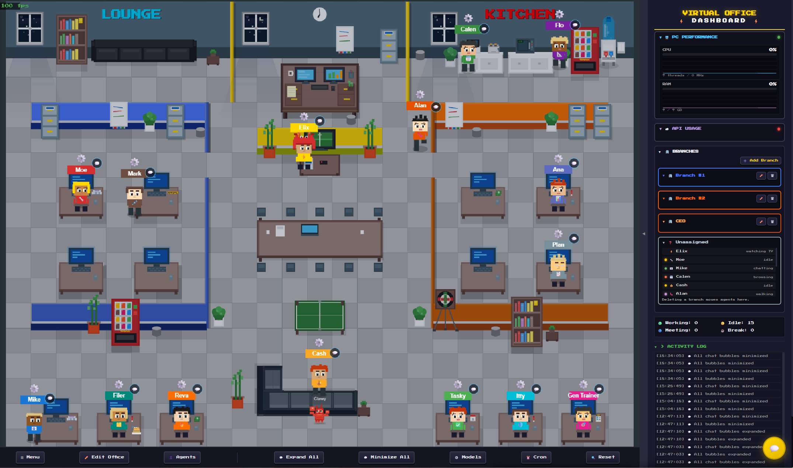

My Virtual Office
这是一份面向使用者和管理员的完整操作手册。它从安装、首次配置开始，说明如何观察 Agent、聊天、编辑办公室、管理项目和技能、使用浏览器与短信，并给出更新、备份、安全和排错方法。
依据当前工作区中的首页、设置向导、模型管理、Cron、Projects、Chat、Browser、SMS 和 Agent Workspace 实现整理。
1. 安装与启动
推荐使用 Docker Compose。默认 HTTP 端口是 8090，聊天 WebSocket 端口是 8091。
git clone https://github.com/eliautobot/my-virtual-office.git
cd my-virtual-office
docker compose up -d确认 Agent 平台可用
启动 Virtual Office 前，先确认 OpenClaw Gateway 正常运行。若使用 Hermes，还要确认 Hermes Home 与 CLI 路径可被服务端访问。
启动容器
运行 Compose 后等待服务就绪。首次使用打开 http://localhost:8090/setup，而不是直接跳过配置向导。
进入办公室
向导完成后会进入 http://localhost:8090/。远程访问时，将 localhost 换成部署机器的局域网或 Tailscale 地址。
这是 Agent 控制面。能够访问办公室的人可能可以聊天、操作项目、查看工作区或控制浏览器。优先使用本机、局域网或 Tailscale。
2. 首次配置向导
| 步骤 | 需要填写 | 作用 | 可否稍后配置 |
|---|---|---|---|
| License | 许可证密钥，或跳过 | 决定 Demo 或完整功能模式 | 可以 |
| Office | 办公室名称、天气城市/州 | 设置标题、右侧品牌名和窗外天气 | 可以 |
| Providers | OpenClaw Home、Gateway Token；可选 Hermes Home/CLI | 发现 Agent、连接聊天与实时状态 | 可以，但 Agent 暂不显示 |
| Browser | CDP URL、Viewer URL | Agent 控制浏览器，用户观看实时画面 | 可以 |
| SMS | Owner Agent、Twilio SID/Token/号码 | 启用短信收件箱和 AI/人工接管 | 可以 |
| PC Metrics | Metrics Server URL | 在右侧显示 CPU、RAM、GPU | 可以 |
每填完一个外部服务地址就先点击 Test/Detect。路径类配置由服务端访问，Viewer URL 则必须能被你当前使用的浏览器访问。
3. 主界面说明

左侧是办公室 Canvas，底部是命令工具栏，右侧是可折叠 Dashboard。
点击 Canvas 与 Dashboard 之间的窄条箭头。收起后办公室会自动重新计算画布尺寸。
4. 办公室观察与编辑
编辑办公室
进入编辑模式
点击 Edit Office。左侧会出现家具目录，工具栏显示 Save 与 Undo。
放置与选择
从目录选择家具后在 Canvas 放置。双击空白处并拖动可框选，或使用 Ctrl+点击逐个多选。
调整和保存
移动选中物体，按 Delete 删除，按 Esc 取消当前操作。确认布局后点击 Save。
Demo 模式可以观察和聊天，但办公室编辑器、完整 Agent 自定义等功能会受到限制。
5. Agent 管理
删除会尝试从对应平台永久移除 Agent，并可能删除工作区、Profile、Memory 和 Session History。不要把它当作“仅从办公室隐藏”。
6. 与 Agent 聊天
打开聊天
点击右下角圆形聊天按钮，或通过 Agent 详情进入。顶部下拉框用于切换 Agent。
发送内容
输入文字后按 Enter 发送，Shift+Enter 换行。回形针可上传图片、PDF、文本、代码等文件；麦克风用于语音输入。
管理会话
Stop 中断当前回复，New Session 清空当前 Agent 的会话历史。Codex 会话可使用 Compact Context 压缩上下文。
使用多窗口
聊天窗口上方的 1、2、3 可打开三个副窗口。每个窗口独立选择 Agent 和 Session；复位按钮恢复等宽布局。
聊天框支持缩放、移动和左右吸附。窗口较多时先使用复位按钮，再关闭不需要的副窗口。
7. Agent Workspace
Workspace 是围绕单个 Agent 的工作台。桌面端在 Agent 工位上打开上下文菜单；移动端长按工位约半秒，然后选择 Open Workspace。
| 标签 | 用途 | 注意事项 |
|---|---|---|
| Overview | 状态、Agent 信息、积分、未完成任务、公告和最近活动 | 适合快速判断当前工作上下文 |
| Bulletin | 发布和删除 Agent 公告 | 用于持久化短消息，不等同于聊天 |
| Tasks | 添加、排序、完成 Workspace Task | 同时显示关联 Project Card |
| Files | 浏览、创建、编辑和删除工作区文件 | 是否可编辑取决于 Agent 平台能力 |
| Skills | 编辑 Agent Skill、安装 Library Skill、保存回 Library | Agent 副本和 Library 主副本相互独立 |
| Notes | 按文件夹维护长期笔记 | 适合记录设计、上下文和交接信息 |
| Settings | 名称、角色、Branch、模型、Cron、Heartbeat | 部分字段仅对 OpenClaw 或特定 Provider 生效 |
8. Projects、Meetings 与 Skills
项目页面可能提供启动、审查和自动执行控制。启用自动模式前，先确认任务描述、负责人、权限和验收标准完整。
9. 高级工具
| 工具 | 入口 | 主要操作 | 配置要求 |
|---|---|---|---|
| Models | 底部 Models | 配置云 Provider、Custom Provider、Ollama、LM Studio 和模型参数 | API Key、OAuth 或本地模型服务 |
| Cron | 底部 Cron | 创建一次性、周期或 Cron Job；选择 Agent、时区、消息、超时与投递目标 | OpenClaw Cron 支持 |
| Agent Browser | 底部 Browser | 查看实时浏览器、四角吸附、最小化、最大化、人工接管和归还 AI | CDP URL + Viewer URL |
| SMS | 底部 SMS | 选择联系人、查看线程、切换 Agent/User 模式、人工发送消息 | Twilio + Owner Agent |
| PC Performance | 右侧 PC Performance | 查看 CPU、RAM、GPU、频率、显存和功耗 | Metrics Server URL |
| API Usage | 右侧 API Usage | 查看 Provider 健康、配额、用量和令牌状态 | 已配置 Provider |
点击 Take Control 后，人工操作可能与 Agent 当前动作冲突。完成操作后点击 Release to AI，避免 Agent 长时间失去控制权。
10. 设置、备份与更新
vo-data volume 保存许可证、布局和设置。更新容器前不要删除数据卷。docker compose down
docker compose pull
docker compose up -d先导出 Office Config，并确认 Docker volume 存在。升级后检查 Agent 列表、Gateway、聊天、Browser Viewer 和自定义 Provider。
11. 常用快捷键
| 场景 | 操作 | 结果 |
|---|---|---|
| 聊天 / SMS | Enter | 发送消息 |
| 聊天 / SMS | Shift + Enter | 输入换行 |
| 办公室编辑 | Esc | 依次取消框选、放置、选择或退出编辑模式 |
| 办公室编辑 | Delete / Backspace | 删除当前家具或墙体选择 |
| 办公室编辑 | Ctrl + 点击 | 逐个加入或移除多选对象 |
| 办公室编辑 | 双击空白后拖动 | 框选多个对象 |
| Projects | Esc | 关闭任务详情或项目表单 |
| 浮层与模态 | Esc | 关闭当前支持 Esc 的弹窗或编辑器 |
12. 常见问题与排查
- 办公室没有 Agent：进入 Menu 检查 OpenClaw Path，运行 Test Connection；Docker 部署还要确认宿主机目录已挂载且容器有读取权限。
- Agent 有显示但不能聊天：检查 Gateway URL、Token、8091 WebSocket、反向代理 Upgrade 头以及 OpenClaw Gateway 状态。
- Hermes Agent 未出现：确认 Auto-detect 已开启，Hermes Home 与 CLI 路径是服务端可见路径，并运行 Test Hermes。
- Browser 按钮不可用：确认功能已启用，CDP 测试和 Viewer 测试均通过；远程访问时不要把浏览器可见地址配置成错误的 localhost。
- Browser 有窗口但黑屏：单独在浏览器打开 Viewer URL，检查 KasmVNC/noVNC 静态资源和 WebSocket 反向代理。
- SMS 无法发送：检查 Twilio SID、Token、From Number、Owner Agent，并确认当前线程已切换到 User 模式后再人工回复。
- PC Performance 离线：确认 Metrics Server 进程、URL、网络和防火墙；服务端必须能请求该地址。
- 布局错乱或浮窗遮挡：先关闭不必要的窗口，复位聊天布局，收起右侧栏或刷新页面；移动端优先使用单窗口。
- 功能被锁定：查看页面顶部是否存在 Demo 标识。Demo 最多 3 个 Agent，Office Editor、Browser、SMS、Cron 等完整功能需要许可证。
先验证外部服务本身，再验证 Virtual Office 的 Test 按钮，然后检查浏览器控制台、服务日志和反向代理。不要一开始就重置办公室。